Conference photos
Can you find me from the following pictures? The answer is given below each photo in white.
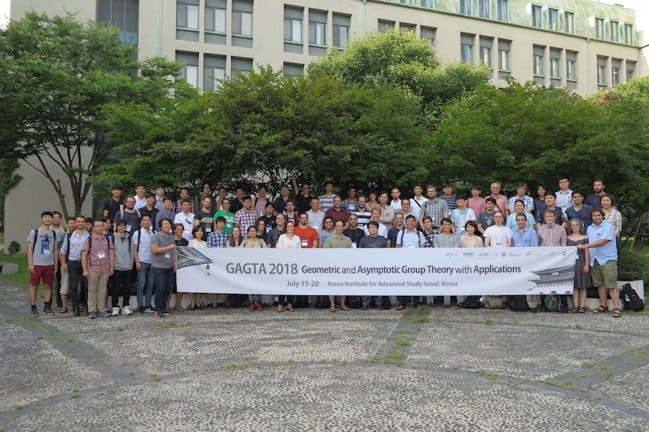
GAGTA 2018, KIAS (July, 2018).
I am holding the banner.
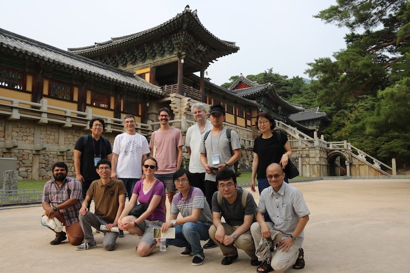
Hyperbolic 3-manifolds and related topics, Postech (June 2018).
I am the 1st from the left in the 2nd row.
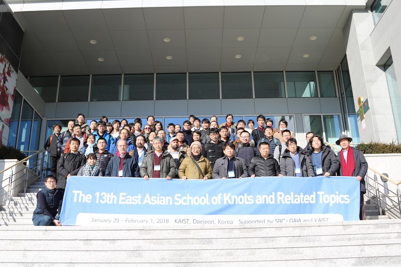
The 13th East Asian School of Knots and Related Topics, KAIST (January, 2018).
I am at the 2nd from the right in the first row.
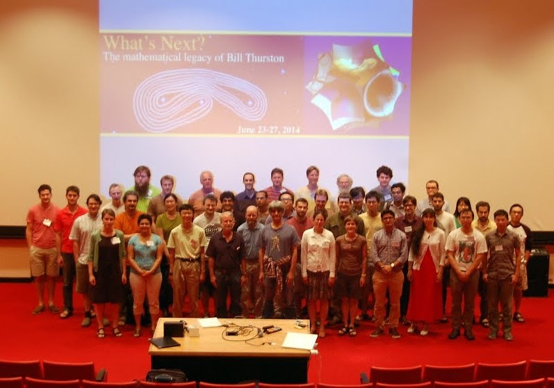
Thurston What's Next Conference 2014: Descendants of Thurston (photo credit: Anne Thomas)
I am right behind David Gabai.
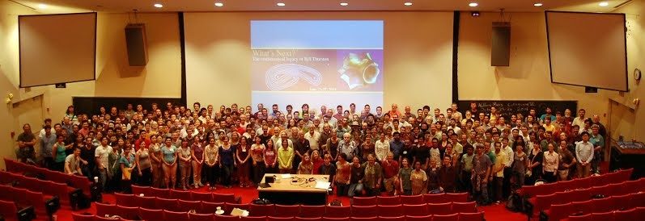
Thurston What's Next Conference 2014: All participants (photo credit: Anne Thomas)
I am near the left edge of screen. (behind Saul Schleimer)
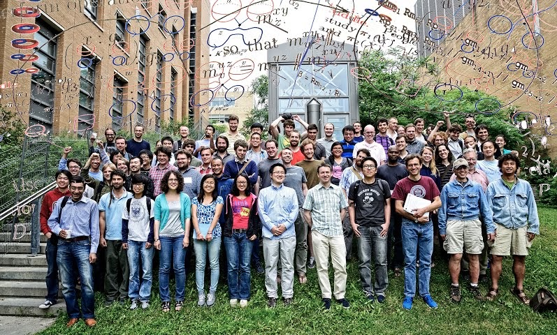
Group photo from a conference about link homology (Université de Montréal, Jul. 2013)
I am in the first row, 4th from the right.
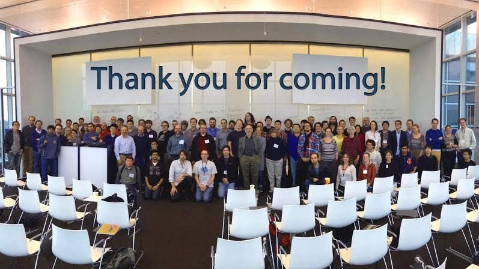
Group Photo from the workshop Topology, Geometry and Group Theory, Informed by Experiment (ICERM, Oct. 2013).
I am the left-most one.
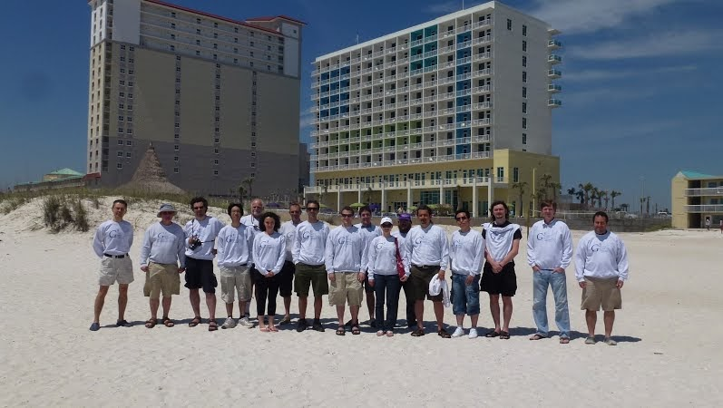
G^3 conference (Pensacola, 2012).
4th from the right.
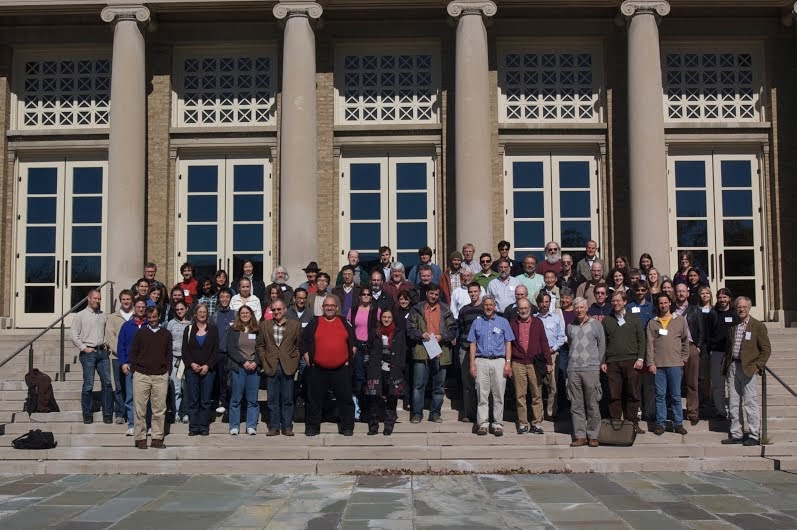
Approaches to Group Theory - Ken Brown's birthday conference (Oct. 2010).
If you find a gentleman in a red shirt in the first row, I am right behind him.
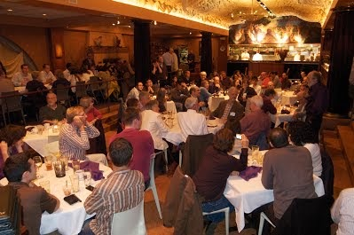
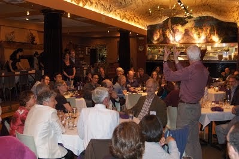
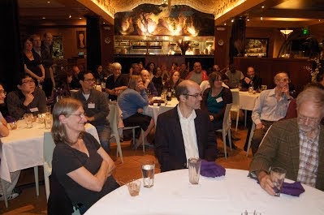
Photos from the banquet of Ken Brown's birthday conference (Oct. 2010).
OK, it might not be easy in the first one,
but it gets way easier in the last one.